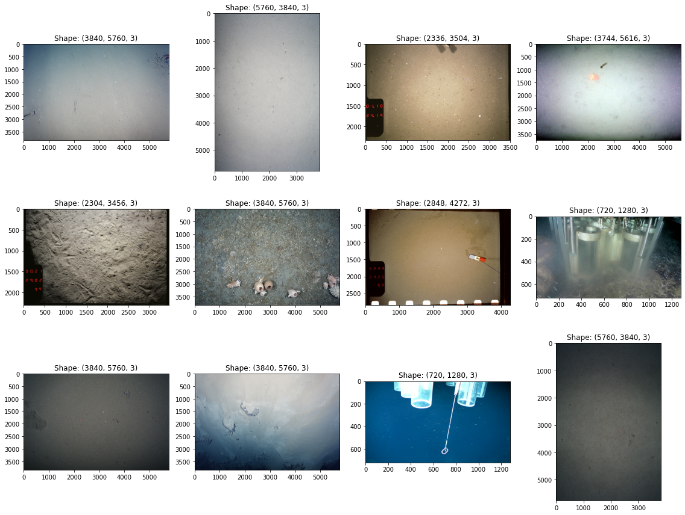

PANGAEA Downloader#
This repository contains tools to search and download benthic habitat image datasets from PANGAEA.

Installation#
You can download the repository using git and install the package with pip.
git clone git@github.com:DalhousieAI/pangaea-downloader.git
cd pangaea-downloader
pip install .
Run downloader#
After installing the package, our PANGAEA downloader can be run by using
the command pangaea-downloader. The default behaviour of is to run a
default list of search queries related to benthic habitat photographs,
and downloaded the resulting datasets into a directory named
query-outputs.
Alternatively, you can run the package as an executable module using
python -m pangaea_downloader.
For details about the command line interface arguments, see the help
available with pangaea-downloader --help.
Developmental setup#
To develop the project, some additional set up steps are needed.
The repository can be cloned and installed (in editable mode) as follows:
git clone git@github.com:DalhousieAI/pangaea-downloader.git
cd pangaea-downloader
pip install -e .[dev]
The repository uses the black code style, and uses pre-commit for quality assurance during development.
Pre-commit automatically sanitizes your code as you commit it. To install pre-commit and set up the pre-commit hooks, run the following code:
pip install -r requirements-dev.txt
pre-commit install
From then on, whenever you try to commit code which needs to be modified by a commit hook, you’ll have to add the changes made by pre-commit and then redo your commit.
You can also manually run the pre-commit stack on all the files at any time:
pre-commit run --all-files